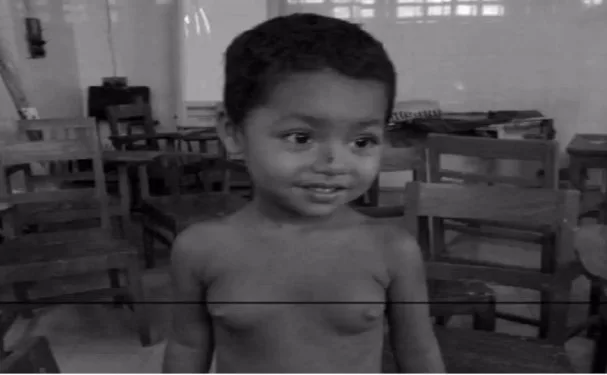
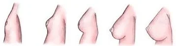
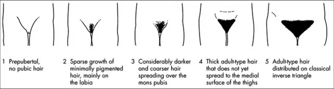
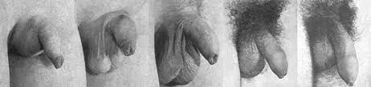
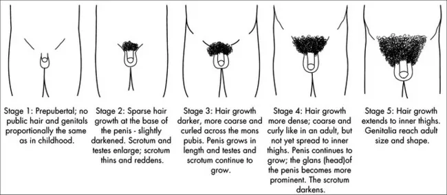
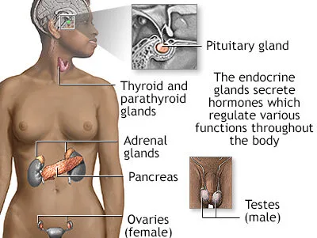

Expanded Nursing Uganda Explanation
Precocious Puberty should be understood beyond a short definition. Link the concept to patient history, focused assessment, common risks, nursing priorities, documentation and evaluation of outcomes.
Contents, 14 sections (tap to expand)
01 PRECOCIOUS PUBERTY
Precocious puberty refers to any physical sex hormone effect , due to any cause, occurring earlier than the usual age , especially when it is being considered as a medical problem.
Precocious puberty is puberty occurring at an unusually early age . In girls , this is before the age of 8 , and in boys , before the age of 9 . It is a condition where secondary sexual characteristics develop earlier than the known age range.
Early pubic hair, breast, or genital development may result from natural early maturation or from several other conditions.
Precocious puberty can make a child fertile when very young , with the youngest mother on record being Lina Medina , who gave birth at the age of 5 years, 7 months and 17 days, in one report and at 6 years 5 months in another.
A 3-year-old girl presents with a one-year history of breast enlargement and per vaginal discharge. The child was reported to be well one year ago, has achieved normal developmental milestones, and has no history of birth injury, head injury, encephalitis, headaches, or seizures.
Clinical Findings:
- White discharge per vagina is observed.
- On examination, bilateral breast enlargement is noted, which is firm in consistency. Developed nipple and areola are also observed.
- Axillary and pubic hair are sparse.
Investigations :
- Elevated levels of LH (luteinizing hormone) and FSH (follicle-stimulating hormone) are reported.
- Abdominal ultrasound reveals an enlarged uterus and ovaries of adult size.
Diagnosis :
This clinical scenario suggests a case of precocious puberty in the 3-year-old girl, marked by premature development of secondary sexual characteristics. Further evaluation and management will be necessary to address the underlying hormonal imbalance and its impact on the child’s health and development.
02 PUBERTY
Puberty is the developmental stage during which a child becomes a young adult , characterized by the maturation of gametogenesis , secretion of gonadal hormones , and development of secondary sexual characteristics and reproductive functions.
03 Tanner Staging in Puberty:
Tanner Staging , invented by James Tanner , is a widely used system to assess the progression of puberty based on physical changes .
- Thelarche denotes the onset of breast development , an estrogen effect.
- Pubarche denotes the onset of sexual hair growth, an androgen effect .
- Menarche indicates the onset of menses .
- Spermarche the appearance of spermatozoa in seminal fluid.
- Gonadarche refers to the earliest gonadal changes of puberty.
Breast Development ( Thelarche ):
- Stage 1 (Preadolescent): No glandular tissue; only the papilla elevated.
- Stage 2: Breast buds appear, along with a small mound of breast and papilla enlargement.
- Stage 3 : Further enlargement, with the breast mound elevating, and areola enlargement.
- Stage 4 : Continued enlargement, areola forms a secondary mound above the breast.
- Stage 5 (Adult): Mature breast; areola returns to general breast contour.
Pubic Hair Development ( Pubarche ):
- Stage 1 (Preadolescent): No pubic hair.
- Stage 2 : Sparse, long, downy hair, mostly along the labia.
- Stage 3 : Darker, coarser, curlier hair spreading over the mons pubis.
- Stage 4: Hair resembles that of an adult, but less in quantity.
- Stage 5 (Adult): Adult distribution; extends to inner thighs.
Tanner Stages in Males:
Genital Development ( Gonadarche ):
- Stage 1 (Preadolescent): Testes, scrotum, and penis are at childhood size.
- Stage 2 : Testes and scrotum enlarge; reddening of scrotum.
- Stage 3 : Penis lengthens; continued testicular and scrotal growth.
- Stage 4 : Increased penis size; scrotum darkens.
- Stage 5 (Adult): Mature genitalia; adult size and shape.
Pubic Hair Development ( Pubarche ):
- Stage 1 (Preadolescent): No pubic hair.
- Stage 2 : Sparse, long, downy hair at the base of the penis.
- Stage 3 : Darker, coarser, curlier hair spreading over the pubic symphysis.
- Stage 4 : Hair resembles an adult, but less in quantity.
- Stage 5 (Adult): Adult distribution; extends to inner thighs.
04 Classification of Precocious Puberty.
Precocious puberty can be divided into 2 types
1. Gonadotropin-releasing hormone (GnRH)–dependent ( Central Precocious Puberty ): GnRH-dependent precocious puberty is more common overall and 5 to 10 times more frequent in girls. In GnRH-dependent precocious puberty, the hypothalamic-pituitary axis is activated, resulting in enlargement and maturation of the gonads, development of secondary sexual characteristics, and oogenesis or spermatogenesis.
- Caused by early maturation of the hypothalamic-pituitary-gonadal axis.
- Characterized by both breast development and pubic hair sexual maturation in girls, and pubic hair and testicular enlargement in boys.
2. GnRH-independent ( peripheral sex hormone effects)Classified as Central or Peripheral Precocious Puberty) : GnRH-independent precocious puberty is much less common. Secondary sexual characteristics result from high circulating levels of estrogens or androgens, without activation of the hypothalamic-pituitary axis.
- Caused by excess secretions of sex hormones from the gonads or adrenal glands.
- Isosexual precocious puberty : Feminizing signs in girls, masculinization in boys.
- Heterosexual precocious puberty : Masculine characteristics in girls, feminization in boys.
05 Conditions Causing Precocious Puberty:
Central Precocious Puberty : Also known as complete or true precocious puberty, is characterized by the early activation of the hypothalamic – pituitary – gonadal (HPG) axis, leading to premature sexual development . Several underlying issues in the hypothalamus or pituitary can contribute to the onset of central precocious puberty. Possible causes include:
- Hypothalamic Haematoma : Formation of a hematoma in the hypothalamus can disrupt the normal inhibitory control of the HPG axis. This leads to the pulsatile release of gonadotropin-releasing hormone (GnRH), initiating premature puberty.
- Langerhans Cell Histiocytosis : Langerhans cell histiocytosis, a rare condition involving the proliferation of Langerhans cells, can affect the regulatory mechanisms in the hypothalamus. Dysregulation in the hypothalamus may result in early activation of the HPG axis, triggering precocious puberty.
- McCune–Albright Syndrome: Genetic mutations causing McCune–Albright syndrome can lead to abnormal functioning of the hypothalamus. Altered hypothalamic function disrupts the normal timing of puberty onset, causing it to occur prematurely.
- Intracranial Neoplasm : Presence of tumors within the brain can interfere with the normal signaling pathways in the hypothalamus. Tumor-induced disruptions can lead to the early release of GnRH, initiating the cascade of events leading to central precocious puberty.
- Infection: Infections, especially central nervous system tuberculosis, can cause inflammation and affect the hypothalamic-pituitary axis. Inflammatory processes may disrupt the normal control mechanisms, triggering premature puberty.
- Trauma : Trauma to the brain, such as head injuries, can damage the hypothalamus and pituitary. Structural damage may result in malfunctioning of the regulatory centers, contributing to the early activation of puberty.
- Hydrocephalus : Hydrocephalus, characterized by an accumulation of cerebrospinal fluid in the brain, can exert pressure on the hypothalamus. Pressure-related damage to the hypothalamus may disrupt the normal control of the HPG axis, leading to central precocious puberty.
- Angelman Syndrome : Angelman syndrome, a genetic disorder, can impact neurological functions, including those in the hypothalamus. Altered neural regulation may contribute to the premature activation of the HPG axis, causing central precocious puberty.
- Idiopathic or Constitutional : If no identifiable cause is found.
Peripheral Precocious Puberty : Peripheral precocious puberty, also referred to as precocious pseudopuberty , involves the premature onset of secondary sexual characteristics due to the influence of sex steroids from abnormal sources . Causes include:
Isosexual (Feminizing) Conditions in Females:
- McCune-Albright Syndrome : Genetic mutations leading to overactive endocrine glands, particularly in the ovaries. Excessive estrogen secretion triggers feminizing features prematurely.
- Ovarian Tumors : Tumors in the ovaries can autonomously produce estrogen. Elevated estrogen levels induce early development of secondary sexual characteristics in females.
Heterosexual (Masculinizing) Conditions in Females:
- Congenital Adrenal Hyperplasia (CAH): Genetic disorder causing adrenal glands to overproduce androgens. Androgen excess leads to the development of masculinizing features in females.
- Adrenal Tumors : Tumors in the adrenal glands produce excess androgens. Androgenic influence results in the manifestation of male secondary sexual characteristics.
- Ovarian Tumors : Ovarian tumors may produce androgens, leading to masculinization. Androgen excess induces the development of male secondary sexual characteristics.
Isosexual (Masculinizing) Conditions in Boys:
- Congenital Adrenal Hyperplasia (CAH) : Genetic disorder causing adrenal glands to overproduce androgens. Excess androgens result in the development of male secondary sexual characteristics.
- Leydig Cell Tumors : Tumors in the testes (Leydig cells) produce excess androgens. Elevated androgen levels lead to the premature appearance of male secondary sexual characteristics.
- hCG-Secreting Tumors : Tumors producing human chorionic gonadotropin (hCG) stimulate androgen production. Increased androgen levels contribute to the development of male secondary sexual characteristics.
Heterosexual (Feminizing) Conditions in Boys:
- Feminizing Adrenocortical Tumor: Tumors in the adrenal cortex produce excess estrogen. Elevated estrogen levels induce feminization in boys.
- Exogenous Hormones : Introduction of external hormones, often used as a treatment for various conditions. Altered hormonal balance influences the onset of secondary sexual characteristics.
Isosexual and Heterosexual Precocity:
Patients with precocious puberty usually develop phenotypically appropriate secondary sexual characteristics, termed isosexual precocity. In rare cases, the development may be in the opposite direction, known as heterosexual or contrasexual precocity.
- Example: Aromatase excess syndrome, a rare genetic condition, causes exceptionally high estrogen levels, leading to hyper feminization in both males and females.
06 Risk Factors:
- Girls with a high-fat diet, lack of physical activity, or obesity may mature earlier.
- Exposure to xenoestrogens, such as Bisphenol A in plastics.
- Pineal tumor secreting chorionic gonadotropin (beta-hCG).
- Elevated melatonin levels.
- Familial cases of idiopathic central precocious puberty (ICPP).
- Mutations in genes like LIN2, LEP, and LEPR, associated with leptin and the leptin receptor.
07 Diagnosis and Investigations in Precocious Puberty.
Clinical Manifestations : The diagnosis of precocious puberty is based on the premature appearance of secondary sex characteristics, occurring before the known age range.
- In Boys : Pubic hair or genital enlargement (gonadarche) before 9.5 years.
- In Girls : Pubic hair (pubarche) before 8 years or breast development (thelarche) before 7 years. Menstruation (menarche) before 10 years.
Blood Tests : Blood tests reveal elevated androgen levels with low cortisol levels.
- Hormone Levels : Elevated androgen levels, plus low cortisol levels.
Evaluation – Medical History:
- Age at onset
- Sex
- Pubertal progression
- Symptoms suggestive of hypothyroidism
- History of past CNS infection, headache, visual disturbances & seizures.
Physical Examination:
- Measurements of height, weight, height velocity
- Pubertal staging according to Tanner’s staging.
- Evaluate androgen & estrogen effects.
- Inspection of skin (Café au lait macules in McCune-Albright Syndrome).
- Examination for signs of hypothyroidism.
Basic Radiology:
- Bone Age : Determines skeletal maturity, aiding in diagnostic accuracy.
- Pelvic & Abdominal Sonography: Identifies anomalies or structural abnormalities influencing puberty.
Hormone Evaluation:
- Intravenous administration of gonadotropin-releasing hormone ( GnRH stimulation test ) or a GnRH agonist (leuprolide stimulation test) is a helpful diagnostic tool for boys.
- In girls, the central nature of sexual precocity can be proven by detecting pubertal levels of estradiol (>50 pg/mL), 20-24 hr after stimulation with leuprolide.
08 Challenges Faced by Precocious Children
The early onset of sexual development poses several challenges:
In Girls:
- Early bone maturation, potentially reducing adult height.
- Indication of tumors or serious health issues.
- Increased risk of becoming an object of adult sexual exploitation.
- Higher vulnerability to sexual abuse.
- Elevated risk of teasing or bullying.
- Mental health disorders.
- Short stature in adulthood due to advanced bone age.
In Boys:
- Increased aggressiveness due to hormonal surges.
- Social pressure to conform to adult norms.
- Cognitive and social development lagging behind physical appearance.
- Early maturing boys are more likely to be sexually active and engage in risky behaviors.
09 Treatment :
- One possible treatment is with anastrozole.
- GnRH agonists like histrelin acetate (Supprelin LA), triptorelin, or leuprolide may be used. Inj. Leuprolide (0.5-0.3 mg/kg/dose) monthly.
- Non-continuous use of GnRH agonists stimulates the pituitary gland, releasing follicle-stimulating hormone (FSH) and luteinizing hormone (LH). Regular use decreases FSH and LH release, but prolonged use carries a risk of osteoporosis . After discontinuation, pubertal changes resume within 3 to 12 months. Regular monitoring is essential during treatment.
Surgery:
- Tumors of the ovary, testis, and adrenals require surgical removal.
- Hypothalamic Hamartomas are hazardous and not recommended because they never grow or become malignant.
- Germ cell, pineal tumors, and hCG-producing suprasellar tumors can be treated by radiotherapy.
10 Nurses Roles during management of Precocious Puberty.
- Assessment and Monitoring : Conduct thorough assessments of patients to gather relevant data. Monitor the progression of secondary sexual characteristics and hormonal levels. Regularly assess the emotional and psychological well-being of the patient.
- Patient and Family Education : Provide extensive education about precocious puberty, its causes, and potential treatments. Explain the significance of diagnostic tests and procedures. Offer guidance on the expected course of treatment and potential side effects.
- Emotional Support : Offer emotional support to the patient and their family throughout the diagnostic and treatment processes. Address concerns and anxieties related to the condition. Facilitate communication between the healthcare team, patient, and family.
- Collaboration with Healthcare Team : Collaborate with endocrinologists, radiologists, and other specialists in the development and implementation of the patient’s care plan. Contribute nursing expertise to the interdisciplinary team.
- Administration of Medications : Administer medications as prescribed, such as GnRH agonists, which are commonly used in the management of central precocious puberty. Educate patients and families on medication administration and potential side effects.
- Monitoring for Adverse Effects : Monitor patients for any adverse effects of medications or interventions. Report and document any unexpected reactions promptly.
- Psychosocial Support: Address psychosocial challenges associated with precocious puberty, such as body image concerns and social interactions. Facilitate support groups or counseling for patients and families.
- Advocacy : Advocate for the patient’s needs within the healthcare system. Ensure that the patient’s rights and preferences are respected.
- Coordination of Care : Coordinate the various aspects of the patient’s care plan. Ensure smooth transitions between different stages of diagnosis, treatment, and follow-up.
- Continuity of Care : Promote continuity of care by maintaining regular follow-up appointments. Facilitate communication between the outpatient and inpatient settings, if necessary.
- Patient Safety : Prioritize patient safety during diagnostic procedures and treatment interventions. Educate patients and families on safety measures at home.
- Documentation : Maintain accurate and comprehensive documentation of patient assessments, interventions, and outcomes. Ensure that all relevant information is available for the healthcare team.
- Patient Advocacy: Advocate for the patient’s holistic well-being, considering physical, emotional, and psychosocial aspects. Address any ethical concerns that may arise during the management process.
- Education on Follow-Up Care: Provide detailed instructions for follow-up care, including medications, appointments, and potential lifestyle adjustments.
- Promoting Coping Strategies : Facilitate the development of coping strategies for both the patient and their family. Encourage open communication and expression of feelings.
11 Nursing Uganda Clinical Lens
Use Precocious Puberty as a practical nursing topic, not only a memorized definition. Adapt assessment and care to age, weight, development, caregiver knowledge and family support.
- What to understand first: define precocious puberty, identify the normal or expected pattern, then explain what changes when the patient is unwell.
- Why it matters in care: the nurse must recognize risk early, explain findings clearly, document accurately and know when to escalate.
- How to revise it: connect each point to assessment, nursing diagnosis or care problem, intervention, rationale and evaluation.
12 Assessment Guide
- Airway, breathing, circulation, hydration, temperature, feeding, activity and danger signs.
- Weight-based medicines, immunization status, growth, development and caregiver concerns.
- Signs that may be subtle in children, including lethargy, poor feeding, fast breathing or convulsions.
13 Nursing Priorities, Rationales and Outcomes
- Use age-appropriate communication and involve the caregiver.
- Prevent dehydration, hypothermia, medication errors and delayed referral.
- Teach home care, danger signs and follow-up clearly.
The rationale for these priorities is patient safety: nursing actions should prevent deterioration, reduce discomfort, support recovery and create clear evidence for the next caregiver.
- Expected outcome: The child is clinically improving, caregiver instructions are understood and follow-up is arranged.
14 Patient Teaching and Revision Check
- Explain precocious puberty in simple language the patient or caregiver can repeat back.
- Teach warning signs, medicine or follow-up instructions, hygiene or lifestyle points where relevant.
- For exams, prepare a short answer using: definition, causes or risk factors, signs, assessment, management, complications and prevention.
- For ward practice, document baseline findings, actions taken, patient response and the plan for review.
Illustrations and Diagrams (13)






5 more diagrams available, open the lesson for full illustrations.
Related Video Lectures
Watch nursing lecture videos on YouTube for this topic. Opens in a new tab.
Watch on YouTubeExternal link: YouTube may use its own cookies and terms. Nursing Uganda is not affiliated with YouTube.